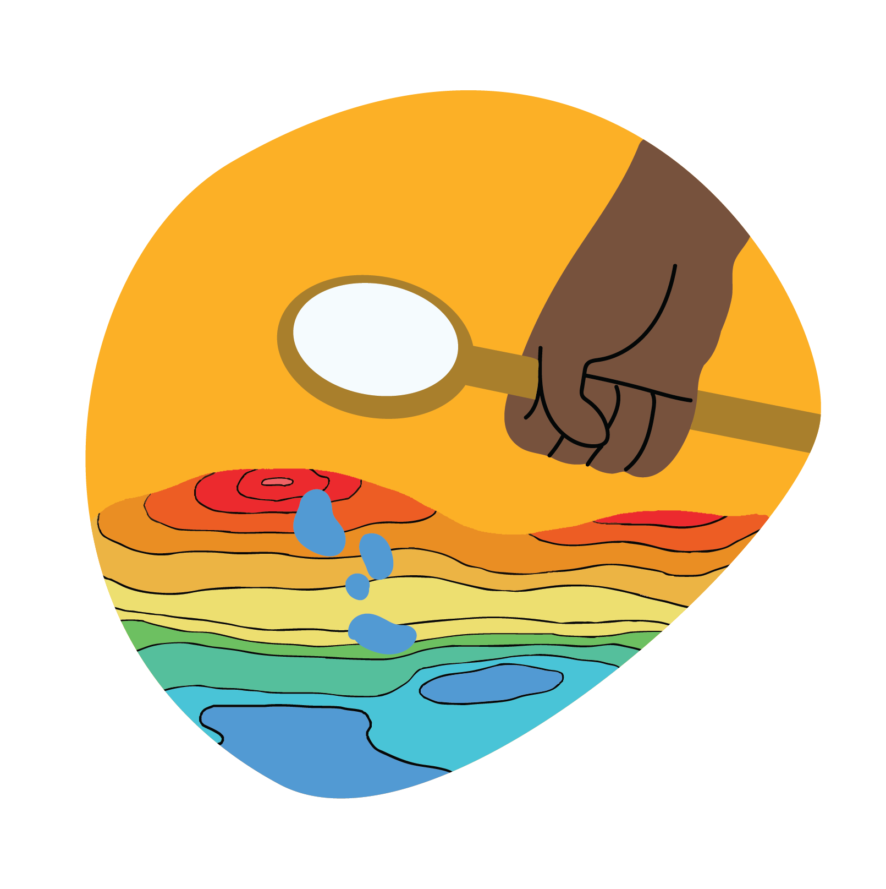
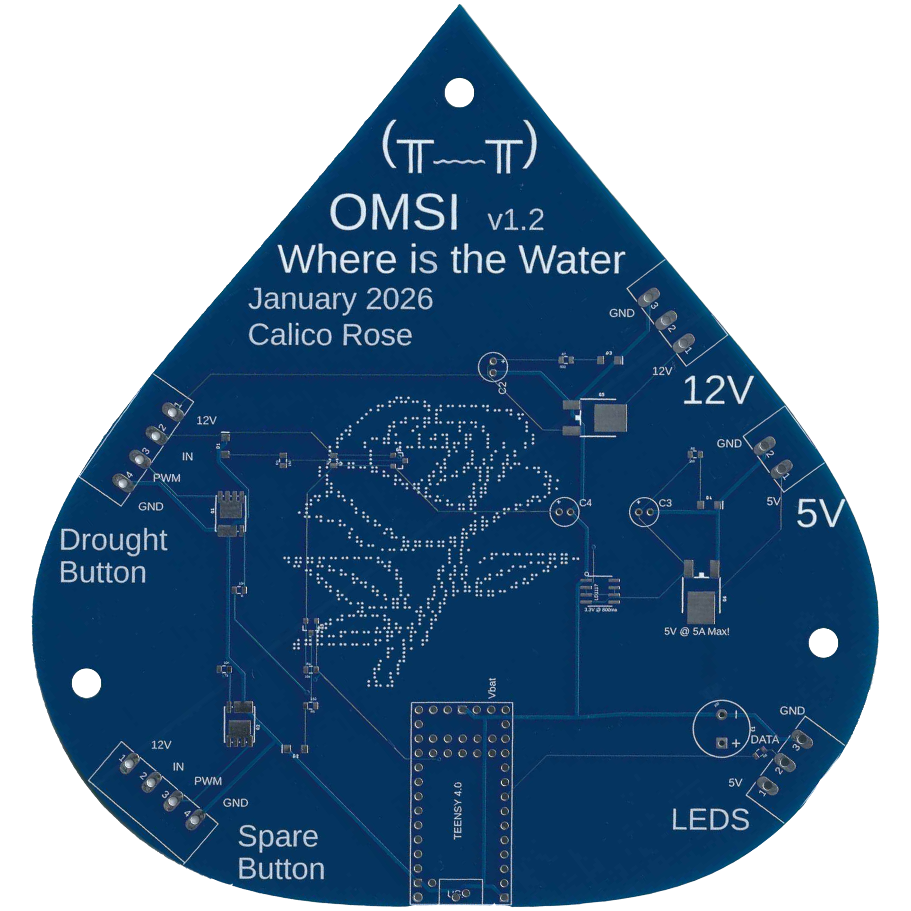

where is the water is a custom augmented reality sandbox built upon SensiLab's open source Unity software that projects depth data onto the sandbox's surface. A Kinect v2 and projector are stationed above the sandbox. the Kinect detects the depth of the sandbox in real time as visitors interact with it and the projector displays the live, textured feed over the sandbox to mimic mountains and valleys, rivers and lakes, that are created by the visitors.
the interactive sandbox was customized for visitors to use a circular tool to create rainfall over the projected landscape and have a button to evaporate the accumulated rain, simulating a drought. using opencv and c#, i developed, tested, integrated, and debugged circle tracking software to trigger rainfall. using heavyM and spout, i mapped the projection to the custom shape of the sandbox.

using c++ and platformio, i developed the firmware for a simple button that triggered the drought. using Autodesk Fusion to design and manufacture the circuit board, which included areas for another button and led lights, in case the exhibit needed to incorporate more features in the future.